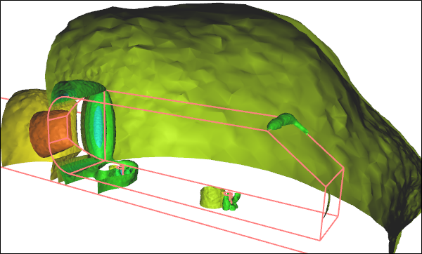
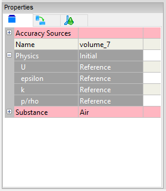
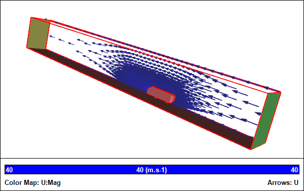
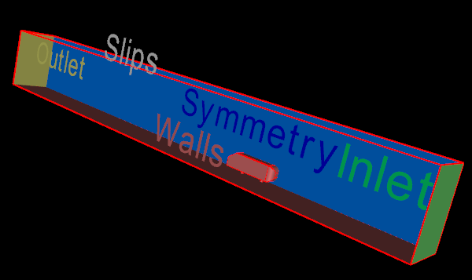

Physics and Solver Setup for CFD
A Computational Fluid Dynamics (CFD) simulation requires that you configure physics and solver values based on your knowledge of your fluid application. Primarily this setup stage requires defining your fluid state, reference values (e.g., velocity), initial values, boundary conditions, and solver parameters. Follow along as I describe each stage and relate it to a CFD simulation of the external airflow over an idealized car.
CFD Simulation of the External Airflow Over an Idealized CarPressure iso-surfaces
Fluid State
The more knowledge you have of your particular fluid application the better, so you can guide your CFD software to select the most efficient solver. For instance, selecting a steady state simulation over an unsteady state (time dependent or transient) simulation will make for a significantly (orders of magnitude) faster turnaround time. However, you have to be relatively confident that your fluid application has a steady state, and if not then you have to be willing to pursue the unsteady option. A similar primary decision as to whether your fluid will behave as incompressible or compressible is important to again select the most efficient solver. Remember that liquids are incompressible, as are gases at low speeds below Mach 0.3.
Secondary state decisions, such as including or excluding heat transfer, will provide greater insights, but at greater computational cost above and beyond your primary state selections.
Fluid State Options
Unique to Reynolds-Averaged Navier-Stokes (RANS) CFD is the requirement for a turbulence model. Though often the default turbulence model will be adequate for most needs, there might be a case to select another model. In addition to typical primary flow variables, such as velocity and pressure, turbulence models introduce their own primary flow variables, such as k and omega or epsilon.
The airflow over a car is typically performed as a steady CFD simulation. Within the RANS assumptions small turbulent oscillations are taken care of by the turbulence model. If we were to run an unsteady simulation then we would have to perform a time-averaged calculation across a series of full results at each time step to obtain pseudo-steady values for lift (or downforce) and drag requiring a significantly longer turnaround time than a steady simulation and with likely little, if any, improvement in accuracy.
Reference Values
You need to define reference values for primary variables, such as velocity and pressure, that represent the bulk values (free stream or inlet values) for your fluid application.
Reference Values
For an external airflow analysis over a car the reference velocity will be the speed of the car and the pressure (assuming incompressible flow with relative pressure) will be zero. These reference values are used internally by the solver and can be reused by initial values and boundary conditions, which are discussed below.
Initial Values
Iterative solvers work by making an initial guess for a solution and then incrementally improving it. The closer the initial guess is to the final solution, the faster the algorithm will converge to that final solution. In practical terms this means that if you can define your initial primary variables (e.g., velocity, pressure) close to their final values, you can get your results quicker.
Initial Values
Returning to the example of the external airflow over a car, we know that the majority of the flow will be at the free stream speed and pressure (assuming a relative reference frame as in a wind tunnel with the car stationary), with local variations close to the car and in its wake. Therefore, the reference values can also serve as initial values for a steady state simulation.
Initialized Flow Field
If we were to simulate the airflow around the car in an unsteady state, then the initial speed should be defined as zero (which would be different to the reference velocity), i.e., as if the car was in a wind tunnel just prior to switching on the fans.
Boundary Conditions
In CFD every surface bounding the flow volume needs to define either the primary flow variables directly or how they vary. Each primary flow variable (e.g., velocity and pressure) typically has a multitude of ways to be defined, usually encapsulated in specific types, such as walls, inlets, outlets.
For the external airflow over a car the surface of the car and the ground are defined as walls, i.e., they are impenetrable by the fluid.
Given a half model (due to symmetry) the dividing surface is assigned as a symmetry plane, which acts like a mirror for all the primary flow variables.
The entrance to the flow volume is assigned as an inlet and the exit is assigned as an outlet. The inlet requires a velocity definition, which simply mimics the reference value (car speed). On the outlet the reference pressure is assigned, then during the simulation the inlet pressure will adjust until it supports the specified inlet velocity. By monitoring the average inlet pressure you can determine how well the simulation has converged. For an internal flow the inlet pressure is equivalent to the pressure drop for the system.
Boundary Conditions
In our example the remaining surfaces (top and side) are assigned as slip surfaces, which is similar to a symmetry condition with the exception that the velocity is constrained to be tangential to the surface.
Solver Parameters
There are a number of parameters that govern solver performance and accuracy. The default values are usually good enough to ensure a robust path to a converged simulation. However, occasionally it may be necessary to modify these parameters to achieve better convergence for steady state simulations via relaxation factors, and/or higher accuracy via differencing schemes. Typically these parameters are the domain of advanced users.
Feedback
Questions? Ideas? Problems?

Recent blog posts
- CFD Simulates Distant Past
- Background on the Caedium v6.0 Release
- Long-Necked Dinosaurs Succumb To CFD
- CFD Provides Insight Into Mystery Fossils
- Wind Turbine Design According to Insects
- Runners Discover Drafting
- Wind Tunnel and CFD Reveal Best Cycling Tuck
- Active Aerodynamics on the Lamborghini Huracán Performante
- Fluidic Logic
- Stonehenge Vortex Revealed as April Fools' Day Distortion Field
 Get our Blog feed
Get our Blog feed